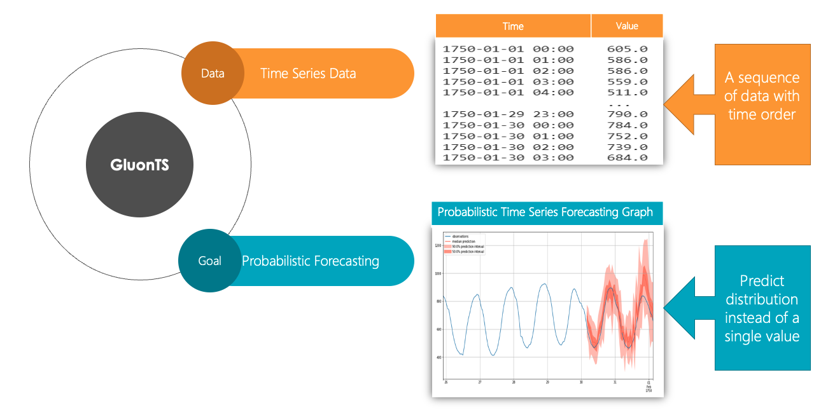
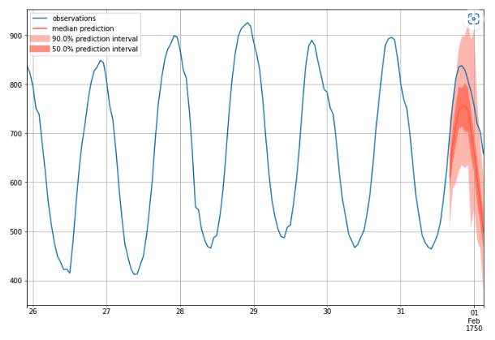

Time Series Forecasting with GluonTS: An Introductory Guide
Team Members
Levi Kaplan, Ming Luo
Project Source and Links
Colab containing our Guide and FindingsMain paper: GluonTS: Probabilistic and Neural Time Series Modeling in Python.
Figure
Introduction
Time series forecasting is a relevant problem in many domains, such as commerce, epidemiology, weather, and sports analytics. Anytime there is historical data that has a time order from which a prediction can be made, time-series forecasting may help make these predictions. It is therefore important for this technique to be more approachable and easier to understand.
This tutorial aims at providing a brief introduction on how to apply deep learning models to do probabilistic time series forecasting. Specifically, this tutorial focuses on explaining the concepts behind GluonTS.
Background
- What is GluonTS?
GluonTS has its unique dataset format requirements [16]. Therefore, the first step of using GluonTS is to have a proper dataset. A proper dataset needs at least the following properties: an iterable collection of data entries (time series) and corresponding target field (column) and start field (column) for each data entry. The target field contains the values of the time series and the start field shows the starting date of the time series. There are three ways to generate proper datasets for GluonTS:
- What is probabilistic time-series forecasting?
Let us first discuss the concept of probabilistic forecasting. Probabilistic forecasting gives a probabilistic distribution of all the possible outcomes instead of one single value. For instance, we can predict the frequency of heads when flipping two coins once, which is a random experience. The result of throwing a coin will be either heads or tails. In addition, the frequency of heads in this experiment can be 0, 1, or 2. Instead of picking a single number from 0,1,or 2 as the prediction result (A.K.A. point forecasting), we are interested in generating a probability distribution table to include all the possible outcomes. The frequency of heads in the outcome is a random variable. The probability distribution table shows how likely each possible outcome is. The probability of outcome 0, which means that both the two coins show tails, is 0.5 * 0.5 = 0.25. The probability of outcome 1, which means that one coin shows tails and the other shows heads, is 2* 0.5 * 0.5 =0.5. The probability of outcome 2, which means that both the two coins show heads, is 0.5 * 0.5 = 0.25. Here is the distribution table:

Probabilistic forecasting is more meaningful than point forecasting since the real world is full of uncertainties. For example, when we do weather forecasting, the prediction is more accurate when we conclude that the probability that tomorrow will be a rainy day is 20% instead of just saying that tomorrow is going to rain or not. Similarly, probabilistic time series forecasting predicts the probabilistic distribution of the future time points.

For example, the above graph is an example of probabilistic time series forecasting. The generation process of this graph is like predicting a time series 1000 times and then plotting the distribution of all possible outcomes. From the graph, we can find the 50% percentile (median), 50% prediction interval, and 90% prediction interval. For example, if this was a graph aiming to predict the demand of milk, we could know that the demand is more likely between 700 to 800 gallons, but unlikely 900 gallons.
- What is GluonTS?
GluonTS [7] is a Python package that can be used to model deep probabilistic time series. Many time series forecasting libraries in the market are based on simpler regression models such as ARIMA, which has low prediction accuracy. However, GluonTS introduces deep learning models to time series data, which substantially increases prediction accuracy. In this tutorial we will illustrate how to use GluonTS to predict future values.
- Use an available dataset provided by GluonTS. There are several built-in datasets, which can be used on the modeling step without post processing.
- Create a self_defined dataset using GluonTS. This type of datasets can be created by using the ComplexSeasonalTimeSeries module, which should be a list of dictionaries. Each dictionary denotes a time series and it at least has the required target and start fields.
- Convert custom dataset to the GluonTS required format. Besides meeting the dataset format requirements mentioned above, we can also add more fields by using transformation objects, which could be helpful to our model. In addition, with the transformation object, we can set the appropriate training and inference windows to increase the forecasting accuracy.
-
Methods
Our primary technique for this study involved reading through documentation and papers and conducting experiments through Google Colab. We read through a number of blog posts, articles, and code walkthroughs from the internet over the course of researching time-series forecasting. Additionally, we read through the GluonTS documentation and code, seeking to understand from a more fundamental way how the library works, how it's trained and tested, and how we can use it to run our own forecasting experiments.
Our contributions take the form of an exploration of time-series forecasting as a problem: what are the training and testing parameters? How is the model trained and run? How can one use GluonTS to solve a time-series forecasting problem? We sought to solve these problems by reading documentation and papers on the subject, and exploring their practical use by coding examples and testing different models' performances through cross-grid hyperparameter tuning.
Results
We have compiled our results into a Google Colab. The link to this can be found here.
References
[1] Anderer, Matthias, and Feng Li. "Hierarchical forecasting with a top-down alignment of independent-level forecasts." International Journal of Forecasting (2022). Link.
[2] Alexandrov, Alexander, et al. "GluonTS: Probabilistic and Neural Time Series Modeling in Python." J. Mach. Learn. Res. 21.116 (2020): 1-6. Link.
[3] Salinas, David, et al. "DeepAR: Probabilistic forecasting with autoregressive recurrent networks." International Journal of Forecasting 36.3 (2020): 1181-1191. Link.
[4] Theil, McClain. An Intuitive Introduction to Deep Autoregressive Networks. Berkeley. Link.
[5] GluonTS DeepAR Documentation. Link.
6] Brownlee, Jason. 11 Classical Time Series Forecasting Methods in Python (Cheat Sheet). Machine Learning Mastery. 6 August 2018. Link.
[7] GluonTS Documentation. Link.
[8] GluonTS Quickstart Tutorial. Link.
[9] Allwright, Steven. RMSE vs MAPE, which is the best regression metric? Link.
[10] Pathak, Puja P. Time Series Forecasting — A Complete Guide. Medium. 8 September 2021. Link.
[11] Batch Normalization. Wikipedia. Link.
[12] Maithani, Mohit. Guide To GluonTS and PytorchTS For Time-Series Forecasting (With Python Implementation). Analytics India Mag. Link.
[13] GluonTS Extended Forecasting Tutorial. Link.
[14] Gasthaus, Jan et. al. Creating neural time series models with Gluon Time Series. AWS. Link.
[15] Hannachi, Skander. 3 facts about time series forecasting that surprise experienced machine learning practitioners. Towards Data Science. 12 September 2018. Link.
[16] GluonTS Concepts. Link.
[17] GluonTS Seasonal Naive Predictor Documentation. Link.
[18] GluonTS Simple Feed Foward Estimator Documentation. Link.